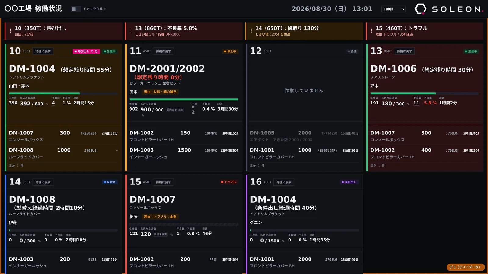
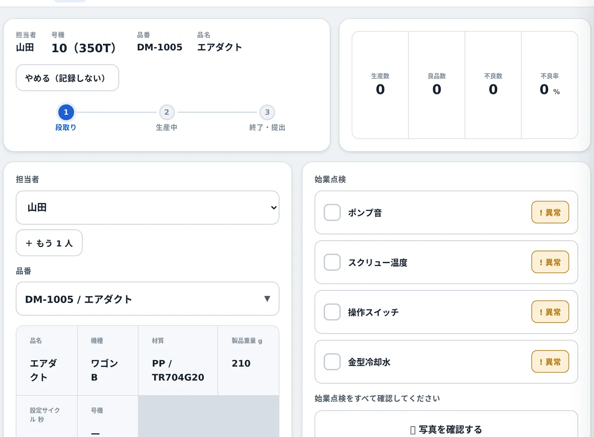
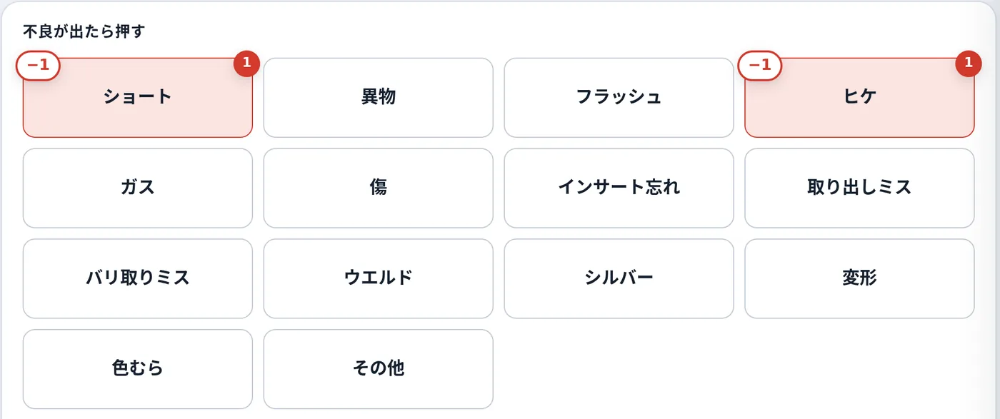
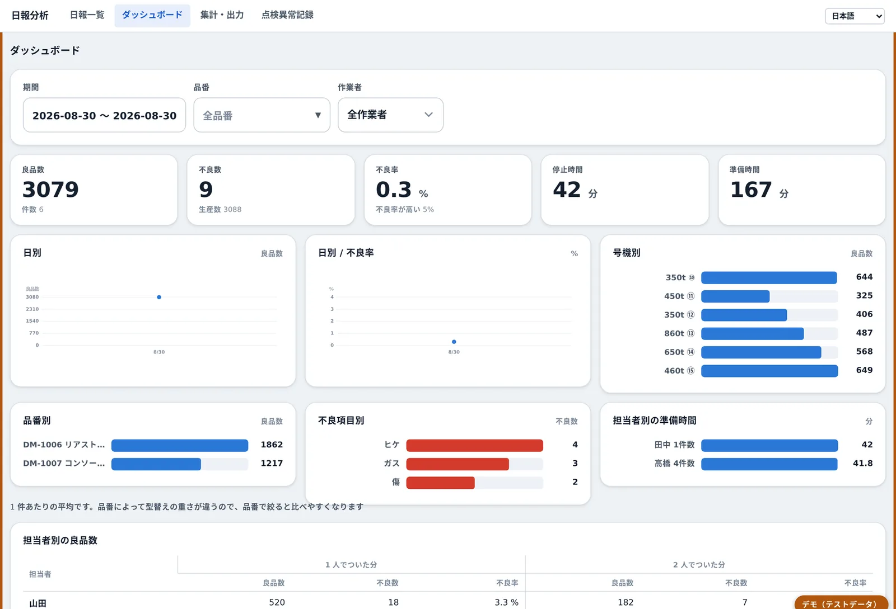
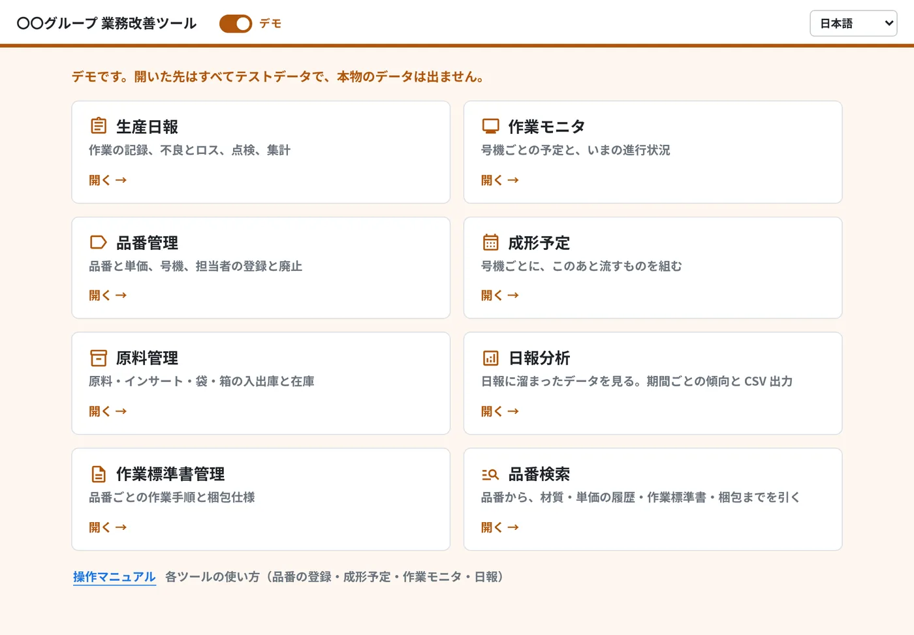
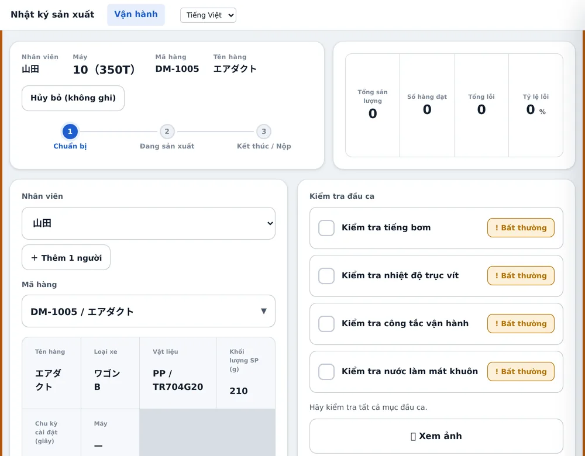
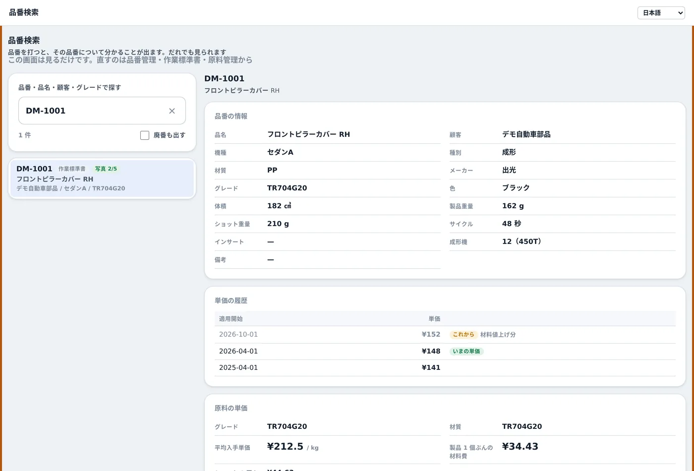
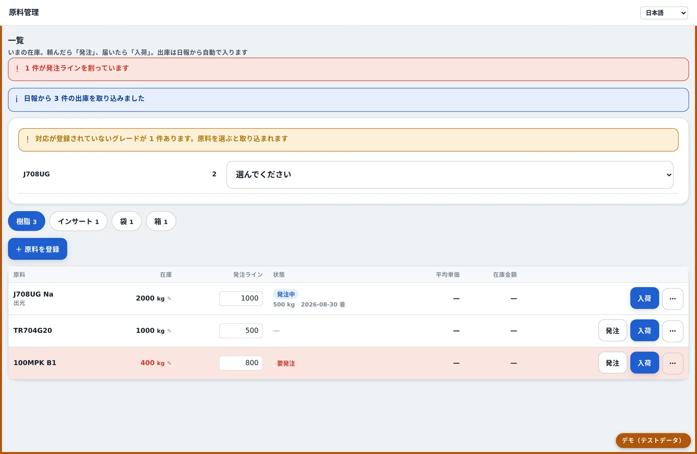
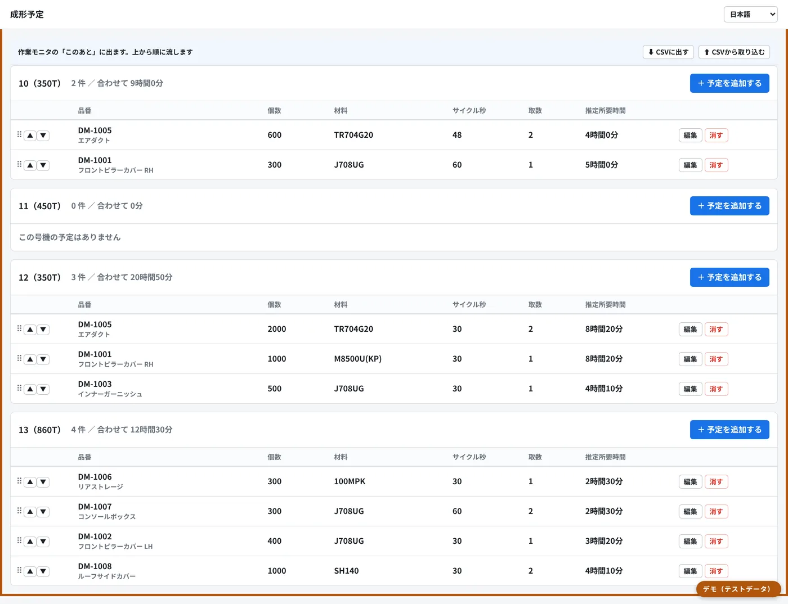
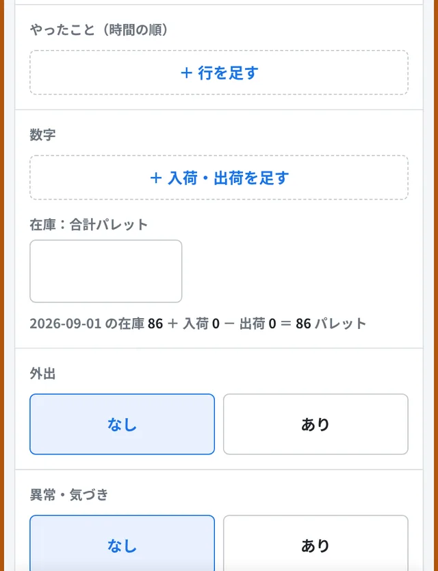

01
WHAT WE DO
必要な社内機能を、必要な分だけ外から。
ものづくり企業の、
もうひとつの社内。
大手のような戦略部門も、専任のIT人材も、社内の設計者も持たない企業に、必要な機能を外から提供します。 4つの領域を、ひとつの窓口で。どこから始めても構いません。
-
01
現場の業務システム
日報・在庫・作業標準書・生産予定。いま紙とExcelとホワイトボードでやっていることを、そのまま使える画面にします。
下に実績があります -
02
情報システム支援
御社の情報システム部を、まるごと外部に。ヘルプデスク・IT資産管理・セキュリティ・ネットワークまで。
-
03
業務効率化・AI活用
定型業務の自動化、ツール連携、AIの業務適用。中長期のIT計画とコスト最適化まで含めて提案します。
-
04
試作支援
設計者のいない企業の、社外設計部として。構想の整理から3D CAD、試作・検証、量産パートナー選定まで。
02
CASE
射出成形の工場 / 複数拠点
日報だけで終わらせない。
品番でひとつにつながる。
ある射出成形の工場で、いま動いているものです。現場に配るURLは1つだけ。開くと、その人が使う道具が並びます。 ログインは要りません――共用のタブレットからも、壁掛けのモニタからも、そのまま開けます。 狙いは「同じ数字を2か所に書かない」こと。日報に入れた材料の使用量は、そのまま原料管理の出庫になります。
このページの画面はすべてテストデータのデモです。実データではありません。 導入先が分かるもの（会社名・工場名・個人名）は写していません。
-
① 作業者
タブレットで入れる
号機を選ぶ → 始業点検 → 生産 → 提出。不良はボタンを押して数える
-
② 現場
壁のモニタに出る
号機ごとの予定と、いまの進行状況。異常は色と音で知らせる
-
③ 事務所
その場で見られる
日別・号機別・品番別・担当者別。CSVでそのまま出せる

作業者のタブレット

不良はボタンで数える

事務所のダッシュボード

入口ページ 現場が覚えるURLはこれ1つ

4言語で使える

品番検索

原料管理

成形予定

- 生産日報作業の記録、不良とロス、点検、集計
- 作業モニタ号機ごとの予定と、いまの進行状況
- 品番管理品番と単価、号機、担当者の登録と廃止
- 成形予定号機ごとに、このあと流すものを組む
- 原料管理原料・インサート・袋・箱の入出庫と在庫
- 日報分析期間ごとの傾向とCSV出力
- 作業標準書管理品番ごとの作業手順と梱包仕様
- 品番検索品番から、材質・単価・標準書・梱包まで
離れた拠点は、スマホで

これで何が変わったか
03
HOW WE WORK
作るときに守っていること
仕様書を先に固めない。
直す速さで返す。
要件定義の往復に何か月もかけません。動くものを先に現場へ置き、出てきたことをその場で直します。 そのやり方が続くように、3つだけ守っています。
-
現場のExcelは、書式を変えない
成形予定表はいま使っているものをそのまま取り込みます。変えてもらう前提の仕組みは続きません。
-
同じ数字を、2か所に書かない
日報の材料使用量が原料管理の出庫になります。取り込んだかどうかを、人の記憶に頼らせません。
-
覚えることを増やさない
URLは1つ、ログインなし。使う人ごとに、押すべきものだけが見えます。
04
COST & LEAD TIME
現場の業務システムを作る場合
同じことを、3分の1の費用で。
納期は、けた違いに早く。
日報・作業モニタ・在庫・作業標準書――現場の紙とホワイトボードを置き換える範囲です。 大手に受託で頼むと3,000万円・1年半かかるところを、1,000万円・数か月でお渡しします。 安いから削っている、ではありません。作り方が違うから、この値段になります。
初期費用（一式）
3,000万円 1,000万円
サーバーを別に建てないので、月々のサーバー費は0円。使う人が増えてもライセンスは増えません。
最初の1本が現場で動くまで
12〜18か月 1か月
ある射出成形の工場では、1か月で11本が現場で動きはじめました（2026年7月30日〜8月29日）。
何が違うか
| 比較項目 | 大手SIerに受託で頼む | 生産管理パッケージ | ソレオン |
|---|---|---|---|
| 初期費用 | 3,000万円〜 | 800〜1,500万円 ＋ 初期設定 | 1,000万円 |
| 最初の1本が動くまで | 12〜18か月 | 6〜12か月 | 1か月 |
| 月々かかるもの | 保守：初期費用の15〜20%／年 | 1人あたりの月額 | サーバー費0円（Google Workspaceの中で動きます） |
| 使う人が増えたら | ライセンスを買い足す | ライセンスを買い足す | 0円・人数の上限なし（共用タブレット・壁のモニタからログインなしで開けます） |
| いま使っているExcel | 標準の書式に直してもらう | 標準の書式に直してもらう | 書式を変えずにそのまま取り込む |
| 使ってみて直したいとき | 変更要求 → 見積 → 数か月 | 標準機能の範囲でしか直せない | その日〜数日で直して出す |
| 画面の言語 | 多言語対応は別費用 | 日本語だけのものが多い | 4言語（日本語・ベトナム語・フィリピン語・英語） |
| 納品したあと | 中身は開発会社が持つ | 中身は見られない | コードも仕様も全部お渡しします |
なぜ、この値段でできるのか
-
01
サーバーを建てない
GoogleスプレッドシートとApps Scriptの上に作ります。サーバーの調達も、その後の運用も要りません。会社にあるアカウントの中で動きます。
-
02
現場に置いてから直す
要件定義の往復に何か月もかけません。動くものを先に現場へ置き、出てきたことをその場で直します。仕様書を先に固めない代わりに、直す速さで返します。
-
03
AIを使って書く
少人数で、受託開発と同じ量を短い期間で書きます。検査も一緒に書くので、あとから直しても前に動いていたところが壊れません。
※ 左の2列の金額・期間は、同じ範囲を受託開発・生産管理パッケージで進めた場合の一般的な事例をもとにした概算です。 実際のお見積りは、対象の範囲・拠点数・既存システムとのつなぎ込みによって変わります。 情報システム支援・業務効率化・試作支援は、それぞれ月額のサブスクリプションでお受けしています。
CONTACT
30分いただければ、
動くところをそのままお見せします。
資料の説明ではありません。こちらのPCで、実際に触っていただきます。 検討段階のご相談から、どうぞ。
- 01こちらのPCで、そのまま触れます
- 02現場を半日見せてください
- 03最初の1本を1か月でお出しします